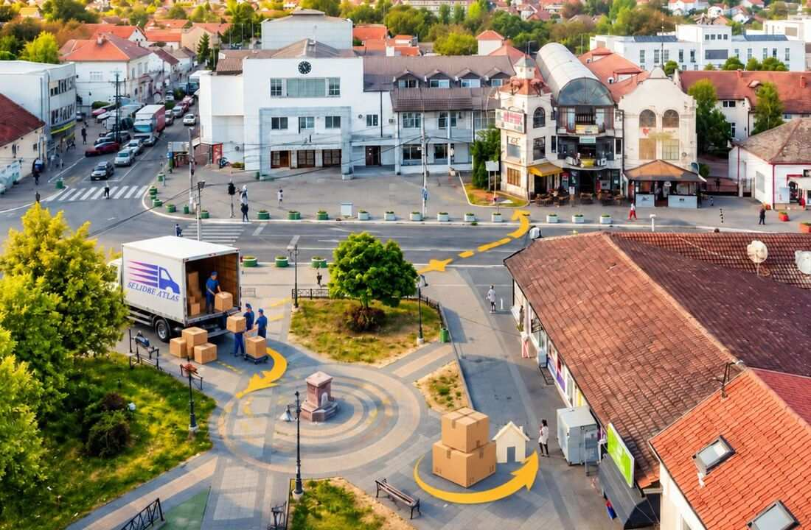
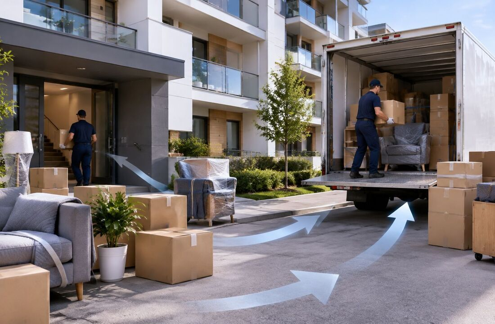
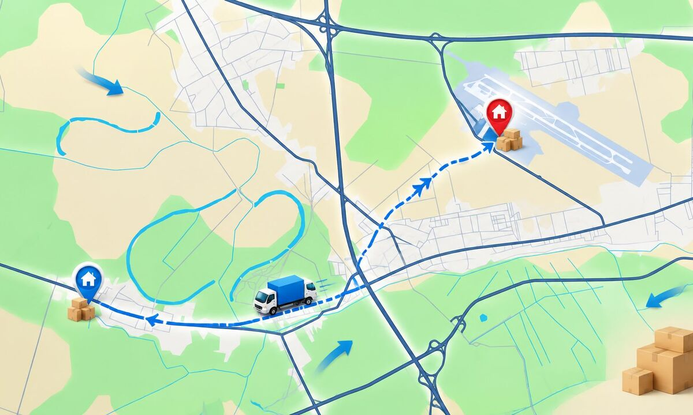

SELIDBE SURČIN
Od prvog pakovanja do transporta na novu adresu, Selidbe Atlas brine o organizaciji vašeg preseljenja u Surčinu i okolinim mestima.
POUZDANA ORGANIZACIJA PRESELJENJA UZ SELIDBE ATLAS
Promena adrese često podrazumeva mnogo više posla nego što se na prvi pogled čini. Bez obzira na to da li se preseljavate u drugi stan, novu porodičnu kuću ili organizujete premeštanje poslovnog prostora, potrebno je uskladiti više različitih aktivnosti kako bi sve proteklo bez nepotrebnog zadržavanja i komplikacija. Upravo zato su selidbe Surčin usluga za koju se sve više ljudi odlučuje kada želi da preseljenje obavi uz pomoć iskusnog tima i odgovarajućeg transporta.
Atlas selidbe Beograd pružaju podršku u organizaciji različitih vrsta preseljenja, od manjih stambenih selidbi do transporta kompletnog nameštaja i kancelarijske opreme. Naš pristup zasniva se na dogovoru sa klijentom, pažljivom rukovanju stvarima i prilagođavanju usluge konkretnim potrebama. Bilo da se selite unutar Surčina ili planirate odlazak na drugu adresu u Beogradu i ostatku Srbije, važno je da svaki deo posla bude dobro isplaniran.

Pouzdana agencija za selidbe u Surčinu
Izbor agencije za selidbe nije samo pitanje pronalaženja vozila kojim će stvari biti prevezene. Potrebno je proceniti količinu nameštaja, obezbediti odgovarajuću zaštitu, organizovati utovar i voditi računa o tome da transport bude usklađen sa dogovorenim terminom. Kada se svi ovi poslovi obavljaju bez prethodnog plana, lako može doći do nepotrebnih komplikacija.
Naša služba nastoji da klijentima olakša čitav proces selidbe Surčin, od prvog dogovora do završetka preseljenja. U zavisnosti od obima posla, organizujemo potreban broj radnika, odgovarajuće vozilo i aktivnosti koje su neophodne za bezbedno premeštanje stvari.
Posebnu pažnju posvećujemo dogovoru pre samog preseljenja. Važno nam je da znamo da li se radi o manjem stanu, porodičnoj kući ili poslovnom prostoru, koliko ima kabastih komada nameštaja i da li postoje predmeti koji zahtevaju dodatnu pažnju. Na osnovu tih informacija lakše se određuju obim posla i način organizacije.
Pozovite Atlas za selidbe u Surčinu
SELIDBE STANOVA I KUĆA U SURČINU
Preseljenje domaćinstva u Surčinu obično uključuje veliki broj različitih stvari. Pored ormara, kreveta, stolova i ostalog nameštaja, potrebno je preneti belu tehniku, kućne aparate, garderobu, posuđe, knjige i brojne sitnice koje se svakodnevno koriste. Kada se sve to radi bez odgovarajuće organizacije, pakovanje i transport mogu oduzeti mnogo vremena.
Kod selidbe stanova posebnu pažnju treba obratiti na pristup zgradi, spratnost, postojanje lifta i mogućnost zaustavljanja vozila u blizini ulaza. Kod porodičnih kuća situacija je često drugačija, jer se može pojaviti veća količina stvari, pomoćni objekti, garaže ili baštenski nameštaj koji takođe treba prevesti.
Kako bi selidba Surčin protekla što jednostavnije, preporučujemo da se unapred izdvoje i pripreme:
- Nameštaj koji se prenosi u novi prostor, uključujući krevete, ormare, komode i stolove.
- Bela tehnika i električni uređaji koji zahtevaju pažljiv transport.
- Garderoba, obuća, posteljina i lične stvari članova domaćinstva.
- Posuđe, stakleni predmeti i drugi lomljivi predmeti koje je potrebno posebno zaštititi.
- Knjige, dokumentacija, dekoracija i ostale sitnice iz svakodnevne upotrebe.
Kada se stvari unapred razvrstaju, lakše je proceniti potreban prostor u vozilu i organizovati njihov raspored tokom utovara. Na taj način se smanjuje mogućnost oštećenja i izbegava nepotrebno premeštanje predmeta tokom transporta.

SELIDBE POSLOVNOG PROSTORA I FIRMI
Pored preseljenja domaćinstava, organizujemo i selidbe firmi i kancelarija. Promena lokacije kancelarije, prodajnog objekta ili drugog poslovnog prostora zahteva nešto drugačiji pristup, jer je važno da se oprema i dokumentacija prebace bez nepotrebnog prekida poslovnih aktivnosti.
U takvim situacijama potrebno je napraviti plan prema kojem će se premeštati radni stolovi, stolice, ormari, računarska oprema, arhiva i ostali inventar. Posebno je korisno da se unapred odredi redosled pakovanja i transporta, kako bi zaposleni nakon preseljenja mogli što pre da nastave sa radom.
Atlas selidbe Surčin mogu organizovati prevoz različitih vrsta poslovnog inventara, uz dogovor o terminu i obimu usluge. U zavisnosti od potreba firme, moguće je planirati selidbe poslovnih prostora u jednoj ili više transportnih tura.
KOMBI SELIDBE I PREVOZ NAMEŠTAJA
Za manje selidbe i prevoz pojedinačnih komada nameštaja nije uvek potrebno angažovati veće transportno vozilo. U takvim slučajevima kombi prevoz predstavlja praktično rešenje, naročito kada se prenosi ograničena količina stvari ili kada je potrebno obaviti transport na kraćoj relaciji.
Kombi selidbe Surčin mogu biti odgovarajuća opcija za studente, pojedince, manje stanove i sve one koji ne planiraju preseljenje kompletnog domaćinstva. Ova usluga može obuhvatiti i prevoz kućnih aparata, pojedinačnih komada nameštaja ili stvari koje su kupljene na drugoj lokaciji.
Zatražite ponudu za preseljenje
Prilikom dogovora važno je navesti šta se prevozi, koliko predmeta ima i da li su potrebni radnici za utovar i istovar. Na osnovu tih informacija može se proceniti da li je kombi odgovarajuće veličine i koliko je vremena potrebno za realizaciju.
KAKO ORGANIZUJEMO SELIDBE U SURČINU?
Dobra organizacija počinje pre dolaska transportnog vozila. Kada se unapred utvrde detalji preseljenja, lakše je rasporediti obaveze i izbeći situacije u kojima se tek na dan selidbe otkriva da postoji više stvari nego što je prvobitno planirano.
Postupak organizacije uglavnom obuhvata nekoliko važnih koraka:
- Dogovor i procena obima posla – prikupljamo informacije o količini stvari, vrsti prostora, spratnosti i udaljenosti između dve adrese.
- Planiranje transporta – određujemo odgovarajuće vozilo i broj radnika u skladu sa zahtevima selidbe.
- Priprema i zaštita stvari – nameštaj i osetljivi predmeti pripremaju se za prenos i transport.
- Utovar i prevoz – stvari se pažljivo unose u vozilo i raspoređuju kako bi tokom vožnje bile što stabilnije.
- Istovar na novoj adresi – nakon dolaska, predmeti se iznose i raspoređuju prema dogovoru sa klijentom.
Svaka selidba u Surčinu ima svoje specifičnosti, pa se navedeni koraci prilagođavaju konkretnom poslu. Na primer, preseljenje manjeg stana može biti završeno uz jednostavniju organizaciju, dok transport kompletnog domaćinstva ili poslovnog prostora zahteva detaljniju pripremu.

U KOJIM NASELJIMA OPŠTINE SURČIN OBAVLJAMO PRESELJENJA?
Opština Surčin obuhvata veći broj naselja i lokacija, zbog čega je prilikom organizacije transporta važno uzeti u obzir tačnu adresu polaska i odredišta. Nije isto kada se stvari prevoze iz porodične kuće u centru Surčina ili iz nekog od okolnih naselja, posebno ako se radi o većoj količini nameštaja i opreme.
Agencija Atlas organizuje selidbe na području Surčina i okolnih mesta, u skladu sa dogovorom sa klijentima. Među lokacijama koje obuhvatamo nalaze se:
- Surčin
- Dobanovci
- Jakovo
- Bečmen
- Boljevci
- Petrovčić
- Progar
- Radiofar
- Novi Surčin
- Ledine
Pored ovih naselja, moguće je organizovati transport i sa drugih lokacija u okolini. Bez obzira na to da li se preseljavate iz Dobanovaca u Surčin, iz Jakova na Novi Beograd ili iz Bečmena u neki drugi deo Beograda, udaljenost i uslovi na adresama uzimaju se u obzir prilikom planiranja.
KOLIKO KOŠTAJU SELIDBE U SURČINU?
Cena selidbe zavisi od više faktora i ne može se odrediti samo na osnovu udaljenosti između dve adrese. Nekada je potrebno prevesti nekoliko većih komada nameštaja, dok drugi posao podrazumeva kompletno preseljenje kuće sa velikom količinom stvari. Zbog toga se svaka ponuda formira prema konkretnim zahtevima.
Na konačan iznos cene preseljenja u Surčinu najčešće utiču:
- Količina i vrsta stvari koje se prevoze.
- Udaljenost između polazne i odredišne adrese.
- Spratnost objekta i postojanje lifta.
- Mogućnost pristupa transportnog vozila ulazu u objekat.
- Potreba za dodatnim radnicima prilikom utovara i istovara.
- Demontaža, montaža i posebna zaštita nameštaja.
- Broj potrebnih transportnih tura.
Da biste dobili što precizniju procenu selidbe u Surčinu, najbolje je da prilikom upita navedete obe adrese, približnu količinu stvari i sve dodatne zahteve. Tako se unapred može sagledati obim posla i predložiti odgovarajući način organizacije.
Kontaktirajte Atlas selidbe Surčin
KAKO DA SE PRIPREMITE ZA PRESELJENJE I IZBEGNETE NEPOTREBNE KOMPLIKACIJE?
Iako agencija preuzima veliki deo posla koji se odnosi na transport nameštaja i rukovanje stvarima, dobra priprema može značajno olakšati čitav postupak. Neke obaveze je korisno završiti nekoliko dana ranije, naročito kada se radi o većem stanu ili kući.
Pre dolaska ekipe za selidbe preporučujemo da obratite pažnju na sledeće:
- Odvojite stvari koje više ne koristite i koje ne planirate da prenesete na novu adresu.
- Spakujte sitnice, garderobu i lične predmete u odgovarajuće kutije.
- Posebno označite kutije sa lomljivim sadržajem.
- Izdvojite dokumentaciju, novac, nakit i druge vredne predmete.
- Ispraznite frižider i pripremite uređaje za transport.
- Obezbedite slobodan prolaz kroz hodnike i prostorije.
- Proverite da li vozilo može nesmetano da priđe objektu na obe adrese.
Ovakva priprema ne zahteva mnogo dodatnog vremena, a može pomoći da se utovar i istovar obave jednostavnije i bez zastoja.
SELIDBE ATLAS – EFIKASNO ORGANIZUJE PRESELJENJA U SURČINU
Promena adrese ne mora da bude komplikovan proces ako se na vreme obezbede odgovarajući transport i pomoć oko prenosa stvari. Bilo da vam je potrebno preseljenje stana, kuće, kancelarije ili samo prevoz nameštaja, važno je da usluga bude prilagođena količini stvari i uslovima na terenu.
Agencija Atlas vam stoje na raspolaganju za organizaciju preseljenja u Surčinu, okolnim naseljima i drugim delovima Beograda, kao i za međugradske selidbe širom Srbije. Kontaktirajte nas, predstavite nam svoje potrebe i dogovorite detalje kako bismo zajedno pronašli odgovarajuće rešenje za vaše preseljenje.
Često postavljana pitanja o selidbama u Surčinu
Da. Pored lokalnih preseljenja, moguće je organizovati i međugradski transport stvari. Selidbe iz Surčina mogu se planirati prema različitim destinacijama u Srbiji, a način realizacije zavisi od količine stvari i udaljenosti.
Da. Nije neophodno da angažujete kompletnu uslugu preseljenja domaćinstva. Ukoliko vam je potreban samo transport određenih komada nameštaja ili kućnih aparata, možemo se dogovoriti o obimu usluge i potrebnom vozilu.
Termin selidbe dogovara se unapred, u zavisnosti od raspoloživosti ekipe i vrste posla. Ukoliko vam više odgovara vikend, najbolje je da to naglasite prilikom prvog kontakta kako bi se proverile mogućnosti organizacije.
Preporučljivo je da se javite nekoliko dana unapred, posebno ako planirate preseljenje kompletnog stana ili poslovnog prostora. Za veće selidbe raniji dogovor ostavlja više vremena za procenu, pripremu i usklađivanje termina.
Da. Ukoliko je potrebno preuzeti stvari sa dve ili više lokacija i prevesti ih na zajedničku adresu, moguće je organizovati i takvu vrstu transporta. Prilikom dogovora potrebno je navesti sve adrese kako bi se unapred isplanirali ruta, vreme i obim posla.